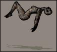

|
Hva er poetikon?
Poetikon er et pittelite nettsted. De ble født for lenge, lenge siden, og målt i hundeår er faktisk disse nettsidene 56 år gamle!
Poetikon (også kalt vanlige folks forlag av og til) lever på sammen måte som et menneske. Det samler og tar til seg materiale, enten det er skrevet, lest opp, sunget, spilt, tegnet, programmert, scannet, fotografert, manipulert, hacket, eller filmet, som det faller seg naturlig, for så å blande disse ubønnhørlig til en deilig liten suppe. Hvis poetikon var et lite troll ville det tilbringe sine late dager med å pille seg i nesen og lage busekunst. F.eks.
Bli med! En ting vi ønsker mer av er dikt i lydform. Hvis du har lest inn tekstene dine, eller har lyst til å gjøre det, eller har lyst til å lese inn andres dikt håper vi du sender oss en mail.
Nyt!
- Vennlig hilsen Poetikon
|
 |